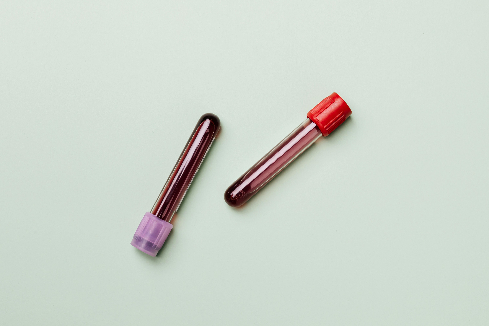

A Clínica Bem-Estar é referência em saúde feminina, reconhecida pelo atendimento humanizado e pela excelência em cuidados voltados às mulheres em todas as fases da vida: crianças, adolescentes, adultas e idosas. Com presença em todas as regiões do Brasil, a clínica se destaca por disponibilizar uma ampla gama de serviços e exames, como consultas ginecológicas e obstétricas, ultrassonografias, colposcopias, histeroscopia, procedimentos ambulatoriais e acompanhamento preventivo.
Consultas ginecológicas e obstétricas conduzidas por especialistas. O atendimento é humanizado voltado tanto para prevenção quanto para acompanhamento.

Com tecnologia moderna e equipe qualificada, garantimos um processo seguro e ágil, oferecendo resultados confiáveis para o acompanhamento da saúde da mulher.
Oferecemos acompanhamento personalizado, como a criação de planos alimentares a partir das necessidades de cada mulher, para promover hábitos saudáveis.
CRM: 12345 - DF
Especialista em saúde preventiva e acompanhamento integral da mulher.
CRM: 67890 - SP
Referência em diagnóstico e tratamento de doenças da mama.
CRM: 11223 - RJ
Atua no diagnóstico e tratamento de distúrbios nutricionais.
CRM: 44556 - MG
Especialista em alterações hormonais femininas.
Estamos presentes em todo o Brasil e prontos para cuidar de você onde estiver. Nossa equipe entrará em contato para indicar a unidade da Clínica Bem-Estar mais próxima da sua residência.